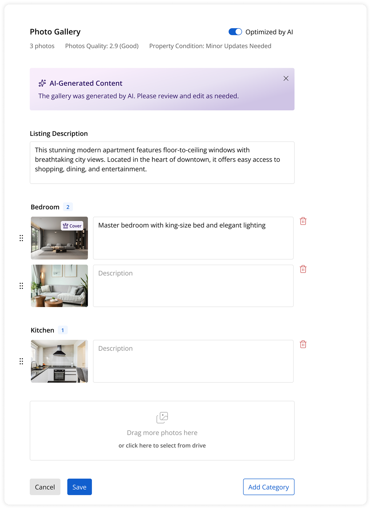

AI Smart Gallery
Context
The product is mature, with long-standing customers managing large numbers of listings. Listings are often imported automatically through integrations and data feeds with minimal manual setup.
Photo galleries across these listings are frequently poorly ordered, cover photos are often not the best available, and overall quality varies significantly. Since listings are updated frequently and in high volume, any solution had to work without requiring ongoing user effort.

Goals
The goal was to improve listing quality through AI-assisted enhancements — automatically, without adding work for users. Any solution in this area had to meet four constraints:
- Automatic:minimal manual setup or ongoing effort required from users
- Non-destructive:original photos and source data must remain unchanged
- Transparent:users should clearly understand what is being optimized
- Reversible:users must be able to return to the original state at any time

Approach
I evaluated two directions: a small focused feature that auto-selects the best cover photo, or a broader Smart Gallery that improves ordering, applies visual enhancements, and groups photos by room.
The simpler option would improve UX but wouldn't change how the product was perceived. The Smart Gallery made AI improvements visible, understandable, and ready to scale — including future monetization potential. We moved forward with the Smart Gallery MVP.
For legacy users this meant no new workflow to learn, no risk to existing data, and full control preserved without friction.
Part of this work involved researching and comparing available APIs — evaluating restb.ai for image recognition and room detection, and imgix for on-the-fly visual enhancements — to understand what each could realistically deliver and at what cost.
The feature set I designed:
- AI-selected cover photo, applied only in Recommended view — original cover stays untouched
- Logical photo ordering into a clear, renter-friendly sequence
- Lightweight visual enhancements — exposure, contrast, sharpness — without replacing files
- Room detection with subtle labels (Kitchen, Bedroom, Bathroom, etc.)
- A simple Recommended / Original toggle so users always understand what's been changed
Outcomes
The feature is currently in development. We want to measure how many users engage with the Recommended view, what percentage switch back to Original, and why — to understand whether AI suggestions are trusted or where they fall short.